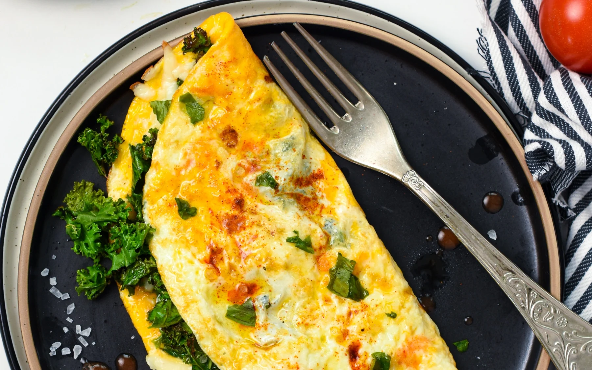

Omelette
Why an Omelette?
To finish our article on recipes we thought what better then a dish that complements both luch
and breakfest, Brunch! Our version of this meal has the perfect combination of nutrition,
conveinence, and taste to keep even someone as lathargic as you satisfied for minutes!
Ingredients
Ingredients as needed are...
- Two Eggs
- Milk
- Salt and Pepper
- Shredded cheese of your choice
- Spinage (dont cry just a litte)
- Pan and Oven
Recipe
- Once Headed crack both of your eggs on your pan and scramble them together.
- While your eggs are cooking sprinkle your shredded cheese (AND YOUR SPINAGE) onto your liquidated eggs.
- When you see that they've fused together a decent amount flip your eggs on top of each other
like you would with a tortia.
- Keep it in this position and consitantly flip sides on the pan.
- Once you see both sides have browned a decent amount, take your omelette off the pan.
And just like that your omelette is done!
Enjoying eating your dish and repeat the same steps again in an hour when your hungry for another one!